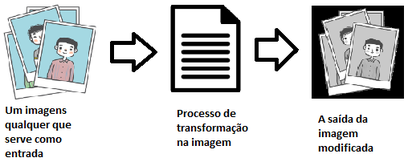

O que é ?
Assim como o processamento de dados que é a atividade onde ocorre uma entrada de dados e posteriosamente isso é processado para a obtenção de uma saída de informação.O processamento de imagem é quando um dado é uma imagem e sofre alguma
modificação para o resultado final ser outra imagem.
Por exemplo: Uma imagem colorida qualquer pode passa por uma modificação na cor e o resultado final seria outra imagem em escala cinza.

Ilustração
Origem
Etapas do processamento de imagens
- Criação de imagem e obtenção de imagem;
- Digitalização;
- Pré-processamento;
- segmentação;
- pós-processamento;
- extração de atributos;
- classificação e reconhecimento.
Qual o objetivo
O processamento de imagens tem como funções facilitar a visualização da imagem ou adequá-la para análises quantitativas através de correções de defeitos ou realces das regiões de interesse nas imagens; e a extração e tratamento de dados quantitativos, feitos pelo próprio computador. (Gomes, 2001).
O que você pode fazer com o processado de imagem
[TEXTO]